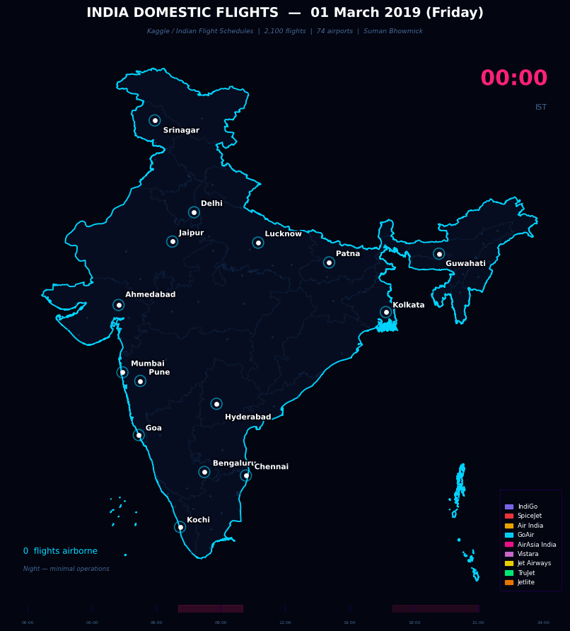

Animated 24-hour flight map across 74 airports and 2,100 routes
This project animates every scheduled domestic flight in India on Friday 01 March 2019 the busiest Friday in the IATA Winter 2018/19 schedule. Each aircraft is represented as a coloured ✈ symbol flying along a curved Bezier arc between its origin and destination airport. Colour encodes the airline. The clock ticks in real time and the progress bar highlights the two daily peak windows when Indian skies are most crowded.
Each ✈ symbol is coloured by airline and rotated to match its heading. The pink clock shows IST. The progress bar at the bottom highlights morning (07:00 10:00) and evening (17:00 21:00) peak windows in pink.

India domestic flight schedules over 24 hours 74 airports • 2,100 flights • 9 airlines • Bezier arc interpolation
07:00 to 10:00 IST
The busiest window of the day. Delhi, Mumbai and Bengaluru hubs explode with activity. The map transforms from near-empty to densely packed within 90 minutes as the first wave of departures fans out across India.
17:00 to 21:00 IST
The second surge, almost as busy as the morning. Return flights converge back on metros. The Delhi Mumbai and Bengaluru Chennai corridors are at their most congested during this window.
23:00 to 05:30 IST
India's domestic network almost completely shuts down overnight. Only a handful of red-eye flights remain airborne. The map returns to the same empty state it started from, ready for the next morning wave.
All day
Delhi, Mumbai and Bengaluru act as the three primary hubs throughout the day. Nearly every route either originates or terminates at one of these three cities, creating a clear hub-and-spoke topology visible in the arc lines.
With 60 scheduled services on this single day, Delhi Mumbai is India's busiest domestic sector. The arc connecting these two cities pulses with activity throughout the day, rarely going dark between 06:00 and 23:00.
IndiGo (purple) accounts for 874 of the 2,100 flights on this day, representing ~28% of operations. At any given peak hour, roughly one in three planes in the animation is an IndiGo aircraft.
Flight paths are drawn as quadratic Bezier curves with a perpendicular control point offset of 22% of the route length. This creates natural-looking curved arcs that avoid overlapping on busy corridors.
Northeast India (Guwahati, Imphal, Dimapur, Agartala) has limited connectivity compared to its population. Most routes require a connection through Kolkata, visible as the lone eastern hub feeding the region.